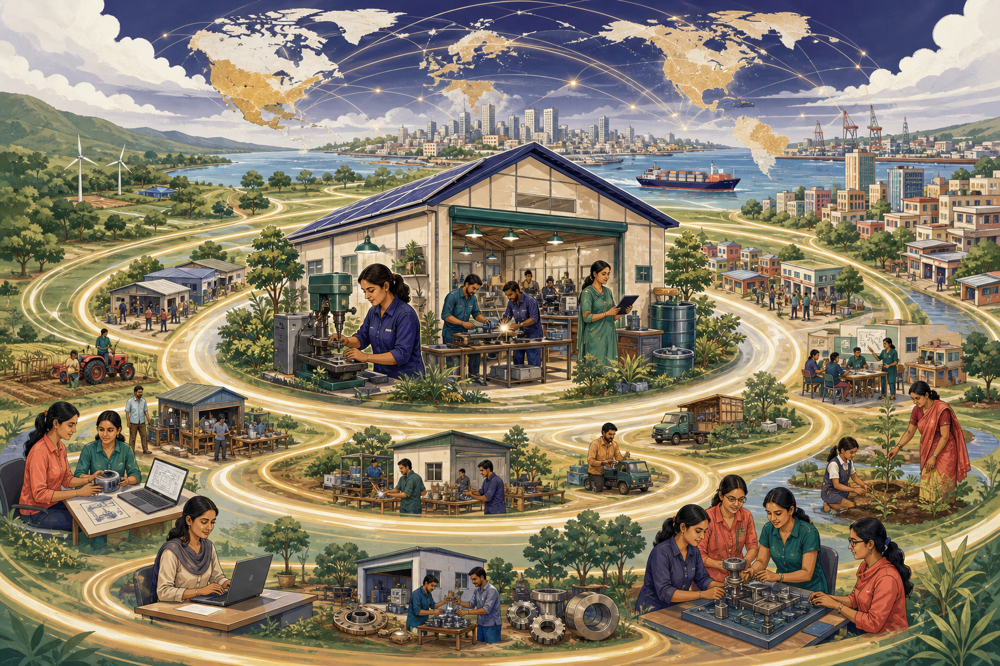

Contextual case
Connect the concept
Case connection: India's diverse startup ecosystem provides a qualitative lens for employment, regional diffusion, women-led ventures, innovation and supplier effects.
I.9 · CO1 · K2
Entrepreneurship connects resources with opportunities and can create economic value beyond the founding firm through innovation, employment and wider networks.

Explore the model
Use the controls to inspect each idea. Visited controls remain marked during this page visit.
Mobilise investment
Entrepreneurs mobilise savings and investment into productive assets, capabilities and new ventures. Reinvestment can expand capacity and create additional economic activity.
Create direct and linked work
Ventures create founder and employee roles as well as supplier, logistics, maintenance, sales and service work. Job quality and safety matter alongside job count.
Improve how value is made
New products, processes and business models can reduce waste, improve quality and intensify competition, encouraging established organisations to improve.
Distribute opportunity
Rural and smaller-city enterprises can use local resources, develop clusters and reduce concentration when infrastructure, skills and market access support sustainable activity.
Build supply networks
Competitive ventures can reach external markets, earn revenue and improve domestic supplier capabilities. Export growth remains valuable only when quality and delivery are reliable.
Raise responsible welfare
Entrepreneurship can widen participation for women, rural communities and first-generation founders while improving useful goods and services. Apply: Which benefit reaches beyond the venture's payroll, and how would you evidence it?
Contextual case
Case connection: India's diverse startup ecosystem provides a qualitative lens for employment, regional diffusion, women-led ventures, innovation and supplier effects.
Misconception watch
Common mistake: Counting every new firm as economic development without examining productivity, survival, job quality, ethics or environmental responsibility.
Ungraded self-check
Trace one engineering venture's direct, supplier, customer and regional effects, including one possible negative externality.
This is formative feedback only; no answer or score is stored.
Storyline Web edition
The accessible web interaction above is ready. A published Storyline edition will appear here after its complete Web output is staged in this folder.
Alignment: CO1 - Discuss the fundamentals of entrepreneurship; K2 - Understand.
Capital, employment, productivity, regional, export and inclusion contributions
Role of entrepreneurship in economic development
Small-enterprise, regional and employment contributions
Template credit: 6-Tabs interaction template by Montse Anderson, elearningdesigner.com
Visible instructional text is paraphrased from the supplied study material and designated references.